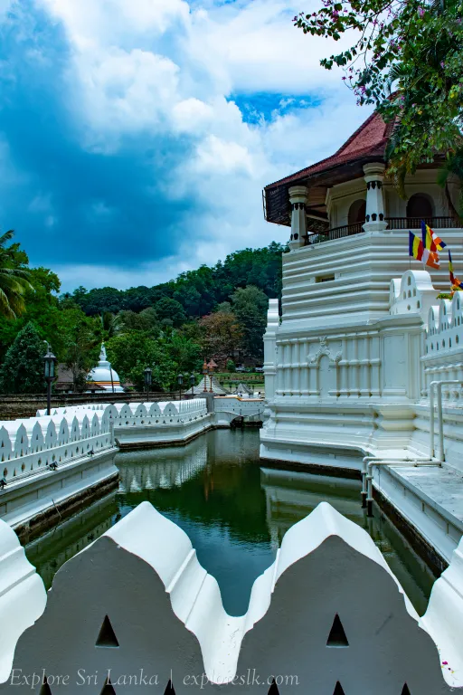
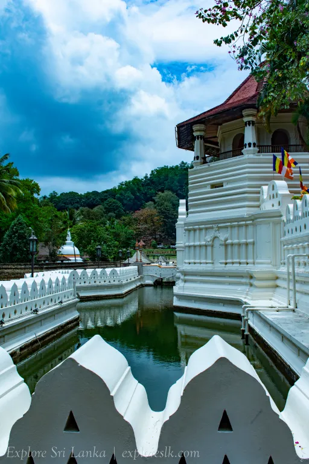

The Sri Dalada Maligawa or The Temple of the Sacred Tooth Relic is a temple in the city of Kandy in Sri Lanka. It was built within the royal palace complex which houses the tooth relic of the Buddha, a tooth, which is venerated by Buddhists. The relic has played an important role in the local politics since ancient times, it's believed that whoever holds the relic holds the governance of the country, which caused the ancient kings to protect it with great effort. Kandy was the capital of the Sinhalese Kings from 1592 to 1815, fortified by the terrain of the mountains and the difficult approach. The city is a world heritage site declared by UNESCO, in part due to the temple.
For more information click here.

 
